9th Grade Technology Worksheets
43 Technology resources for 9th Grade, ready to print: Steve Jobs, Stampa 3D, Software, Robot and more. Each resource page shows the grade range, page count and a preview and links straight to the product on TpT.
43 resources

Steve Jobs – Italian Reading Comprehension Worksheet (Scheda): Cloze & Listening

Stampa 3D – Italian Reading Comprehension Worksheet (Scheda): Cloze & Listening

Software – Italian Reading Comprehension Worksheet (Scheda): Cloze & Listening

Robot – Italian Reading Comprehension Worksheet (Scheda): Cloze & Listening
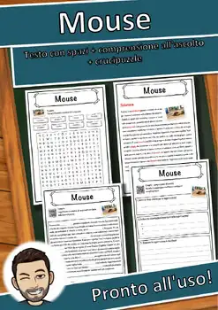
Mouse – Italian Reading Comprehension Worksheet (Scheda): Cloze & Listening
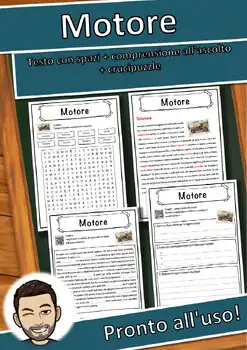
Motore – Italian Reading Comprehension Worksheet (Scheda): Cloze & Listening
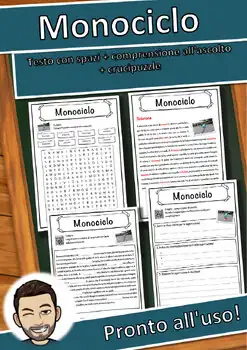
Monociclo – Italian Reading Comprehension Worksheet (Scheda): Cloze & Listening
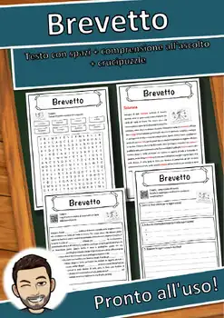
Brevetto – Italian Reading Comprehension Worksheet (Scheda): Cloze & Listening

Lavastoviglie – Italian Reading: Cloze, Listening & Word Search

Karl Benz – Italian Reading: Cloze Text, Listening Task & Word Search (Scheda)
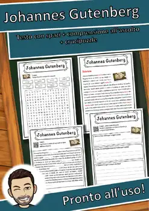
Johannes Gutenberg – Italian Reading: Cloze, Listening & Word Search
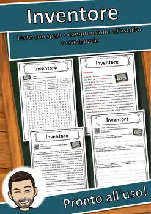
Inventore – Italian Reading: Cloze Text, Listening Task & Word Search (Scheda)
Internet – Italian Reading: Cloze Text, Listening Task & Word Search (Scheda)
Informazione – Italian Reading: Cloze, Listening & Word Search
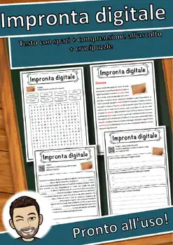
Impronta digitale – Italian Reading: Cloze, Listening & Word Search
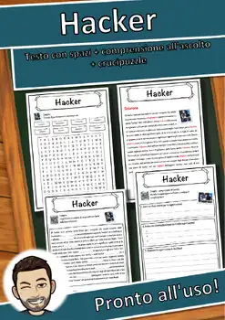
Hacker – Italian Reading: Cloze Text, Listening Task & Word Search (Scheda)
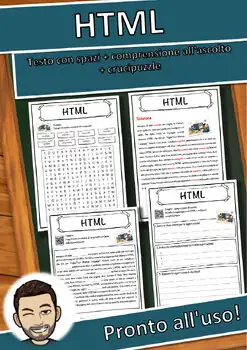
HTML – Italian Reading: Cloze Text, Listening Task & Word Search (Scheda)
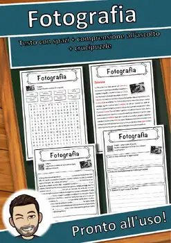
Fotografia – Italian Reading: Cloze Text, Listening Task & Word Search (Scheda)
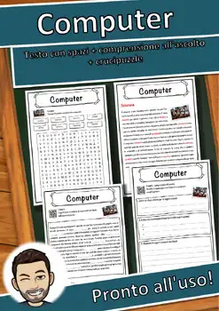
Computer – Italian Reading: Cloze Text, Listening Task & Word Search (Scheda)
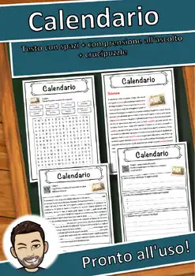
Calendario – Italian Reading: Cloze Text, Listening Task & Word Search (Scheda)
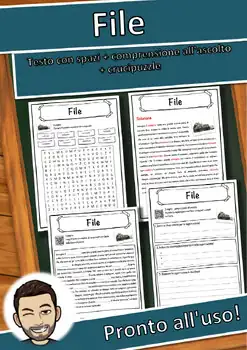
File – Italian Reading: Cloze Text, Listening Task & Word Search (Scheda)
Fax – Italian Reading: Cloze Text, Listening Task & Word Search (Scheda)
Escavatore – Italian Reading: Cloze Text, Listening Task & Word Search (Scheda)
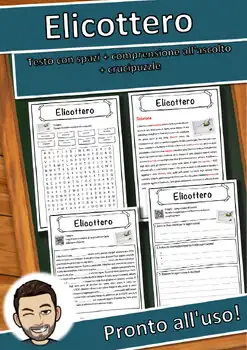
Elicottero – Italian Reading: Cloze Text, Listening Task & Word Search (Scheda)
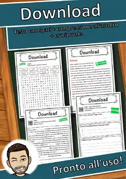
Download – Italian Reading: Cloze Text, Listening Task & Word Search (Scheda)
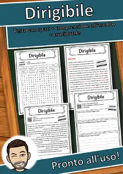
Dirigibile – Italian Reading: Cloze Text, Listening Task & Word Search (Scheda)
Digestione anaerobica – Italian Reading: Cloze, Listening & Word Search
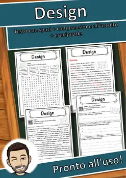
Design – Italian Reading: Cloze Text, Listening Task & Word Search (Scheda)
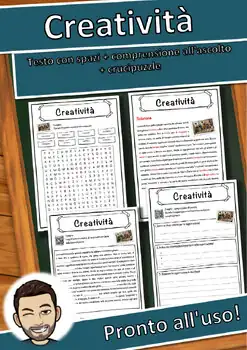
Creatività – Italian Reading: Cloze Text, Listening Task & Word Search (Scheda)
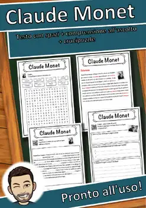
Claude Monet – Italian Reading: Cloze, Listening & Word Search
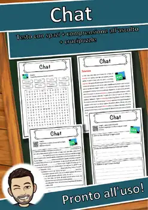
Chat – Italian Reading: Cloze Text, Listening Task & Word Search (Scheda)
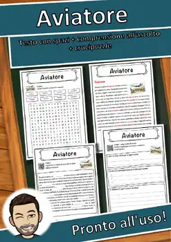
Aviatore – Italian Reading: Cloze Text, Listening Task & Word Search (Scheda)
Autovettura – Italian Reading: Cloze Text, Listening Task & Word Search (Scheda)
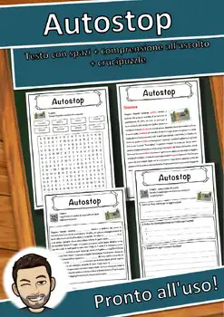
Autostop – Italian Reading: Cloze Text, Listening Task & Word Search (Scheda)
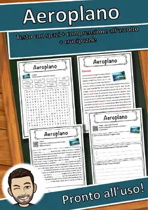
Aeroplano – Italian Reading: Cloze Text, Listening Task & Word Search (Scheda)
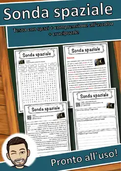
Sonda spaziale – Italian Reading Comprehension Worksheet (Scheda didattica)
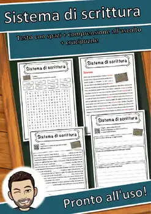
Sistema di scrittura – Italian Reading Comprehension Worksheet
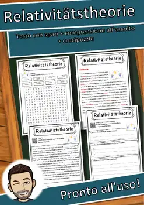
Relativitätstheorie – Italian Reading Comprehension Worksheet (Scheda didattica)
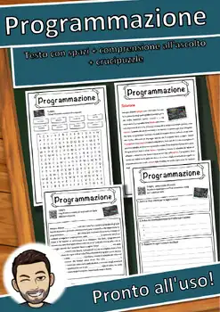
Programmazione – Italian Reading Comprehension Worksheet (Scheda didattica)
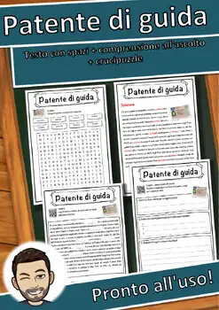
Patente di guida – Italian Reading Comprehension Worksheet (Scheda didattica)
Motore a vapore – Italian Reading Comprehension Worksheet (Scheda didattica)
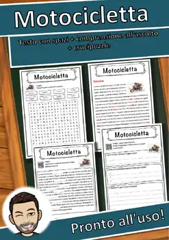
Motocicletta – Italian Reading Comprehension Worksheet (Scheda didattica)

Macchina per scrivere – Italian Reading Comprehension Worksheet
No resources found – try a different search term or filter.